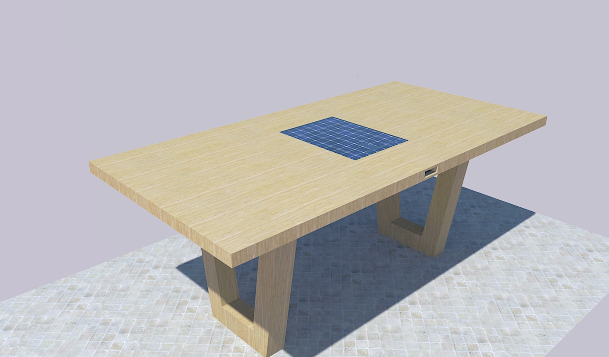

DOMOV
PowerRest smo skupina dijakov 2. letnika Gimnazije Vič, ki pri projektnem delu poizkušamo izdelati leseno mizo s solarnim polnilcem za mobilne naprave. Idejo projekta sta si sicer omislila profesorica Alenka Mozer in profesor Timotej Maroševič, mi smo jo pa začeli razvijati. Skupino PowerRest sestavljamo: Gal Banko, Rok Capuder, Lenart Mrzelj, Maks Musar, Robert Samardžija in Andraž Tomšič.
Po uspešni izdelavi prototipa nameravamo mizo s solarnim polnilcem postaviti na dvorišče Gimnazije Vič, kjer bi si lahko dijaki med odmori polnili mobilne naprave. Če nam uspe, bi projekt lahko uporabili tudi v javnih parkih, na mestnih trgih, doma (na lastnih dvoriščih) itd. V zavihku 'o projektu' si lahko preberete več o našem projektu, v galeriji si oglejte nekaj fotografij/računalniških grafik izdelka, v zavihku 'viri' pa.. vire.